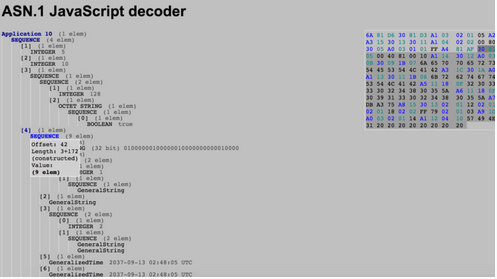

Unfortunately, I don’t have time to give a full ASN.1 tutorial, but I will share a few pointers that helped me while developing this tool. The specifications we care about for the AS-REQ are laid out on page 55 of RFC1510 and page 74 of RFC4120. Benjamin Delpy also documents all these ASN.1 structures amazingly in his Kekeo project. Here’s the structure description:
AS-REQ ::= [APPLICATION 10] KDC-REQ
KDC-REQ ::= SEQUENCE {
pvno[1] INTEGER,
msg-type[2] INTEGER,
padata[3] SEQUENCE OF PA-DATA OPTIONAL,
req-body[4] KDC-REQ-BODY
}
PA-DATA ::= SEQUENCE {
padata-type[1] INTEGER,
padata-value[2] OCTET STRING,
-- might be encoded AP-REQ
}
KDC-REQ-BODY ::= SEQUENCE {
kdc-options[0] KDCOptions,
cname[1] PrincipalName OPTIONAL,
-- Used only in AS-REQ
realm[2] Realm, -- Server's realm
-- Also client's in AS-REQ
sname[3] PrincipalName OPTIONAL,
from[4] KerberosTime OPTIONAL,
till[5] KerberosTime,
rtime[6] KerberosTime OPTIONAL,
nonce[7] INTEGER,
etype[8] SEQUENCE OF INTEGER, -- EncryptionType,
-- in preference order
addresses[9] HostAddresses OPTIONAL,
enc-authorization-data[10] EncryptedData OPTIONAL,
-- Encrypted AuthorizationData encoding
additional-tickets[11] SEQUENCE OF Ticket OPTIONAL
}
Another thing that helped me a lot was to Wireshark legitimate Kerberos exchanges, export the Kerberos packet bytes, and visualize the data using this JavaScript ASN.1 decoder:
